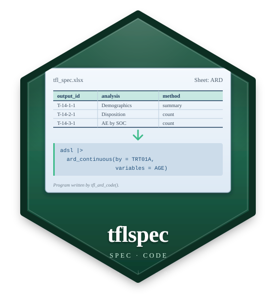

Objective response: a table plan from the template orr
Source: R/tpl_registry.R
tpl_orr.RdThe best overall response (n (%)) and the objective response rate with its 95% CI, by arm.
Arguments
- ard
The normalized ARD's source: the study ARD's rows of this report.
- population
The analysis set's id (
"SAF").- ...
The template's other parameters:
by,by_levels,data,param,category,responders,ci_method,conf_level(0.95, the CI's level and its row's label),stat_layout,heading.stat_layout = "rows"(the default) puts the rate and its CI under each other in the arm's column;"cols"gives each arm two columns, the rate and the CI (the layouttpl_stat_block()).- codelists
The report's code lists, for the order and labels of values;
NULLtakes the ARD's.